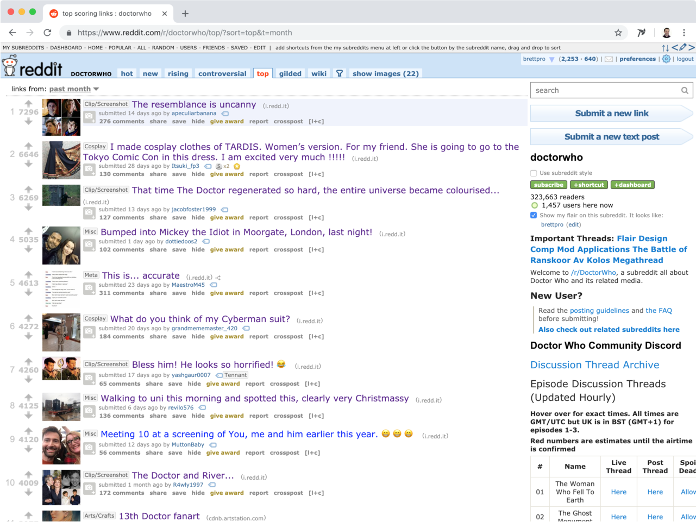
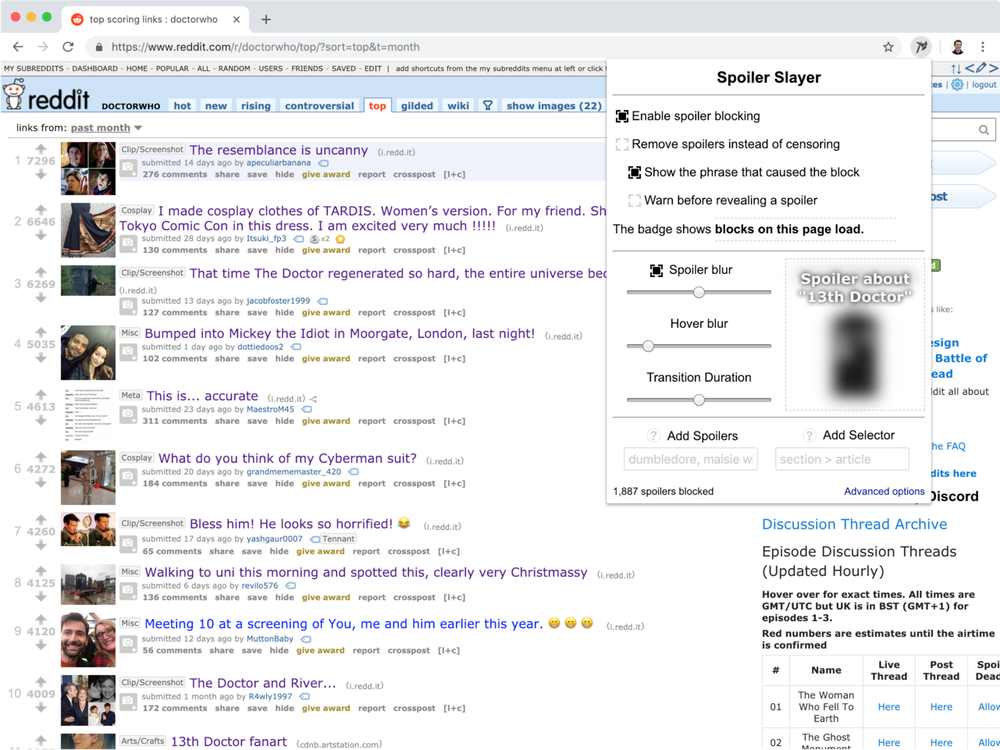
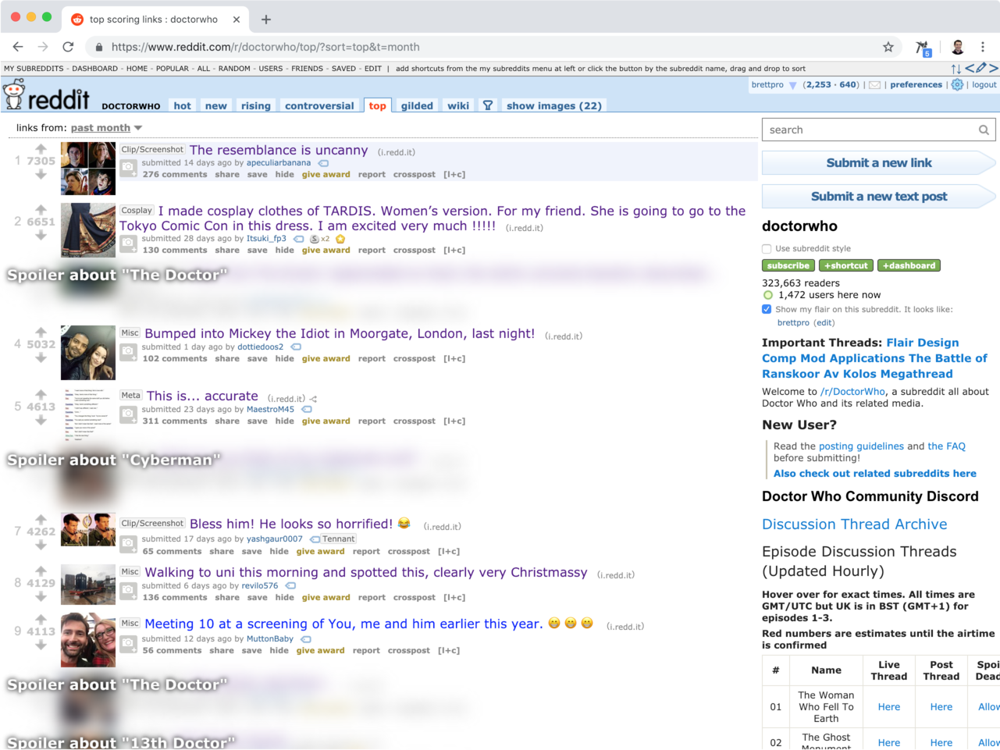
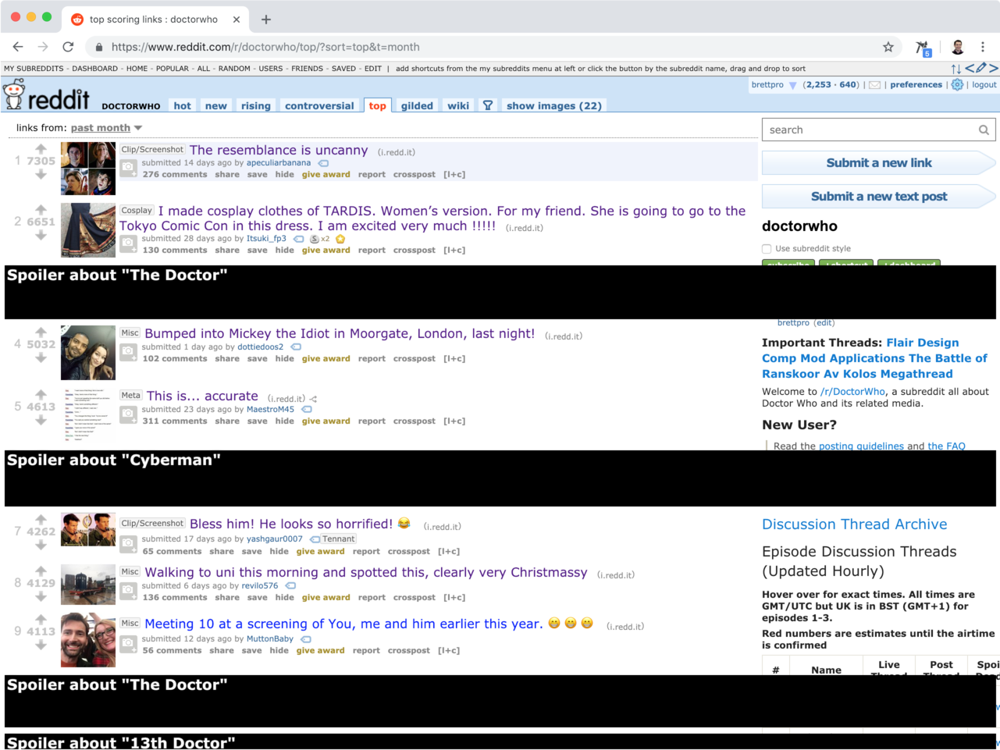
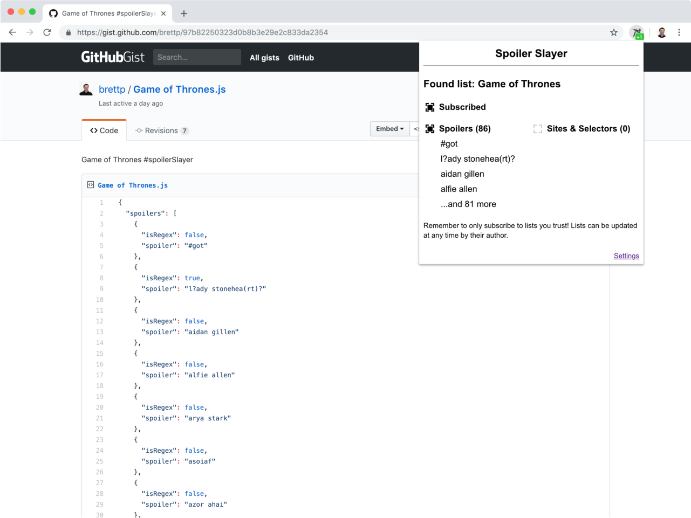
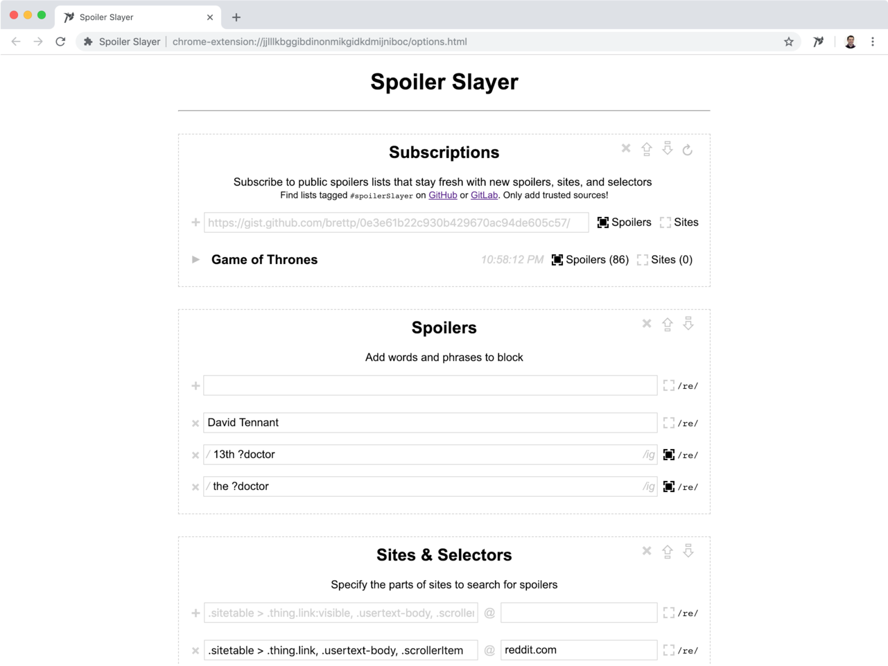

-

Click the Spoiler Slayer icon
 ...
...
-

...to open settings...
-

...and customize...
-

...blocking options.
-

Click the Spoiler Slayer subscribe icon
 when on a supported site to subscribe to a list that is continuously updated.
when on a supported site to subscribe to a list that is continuously updated.
-

Use advanced settings to fine tune spoiler blocking on sites you visit most.
-


All set. Enjoy your spoiler-free browsing!
Click to open the options page and optionally load defaults